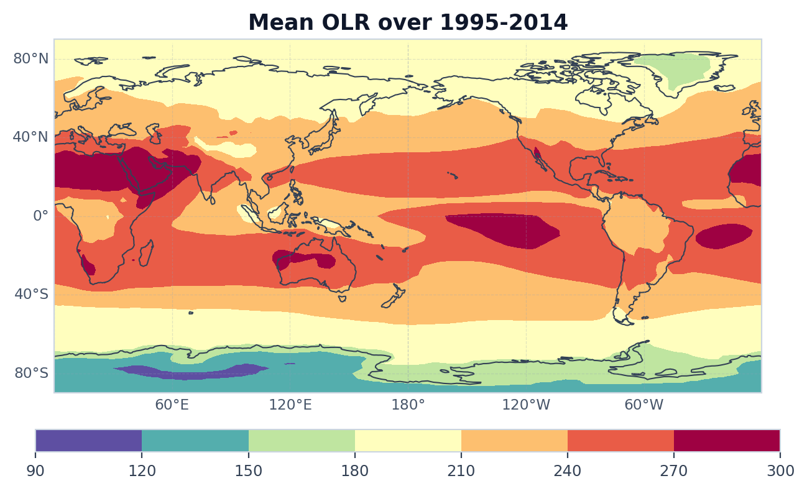
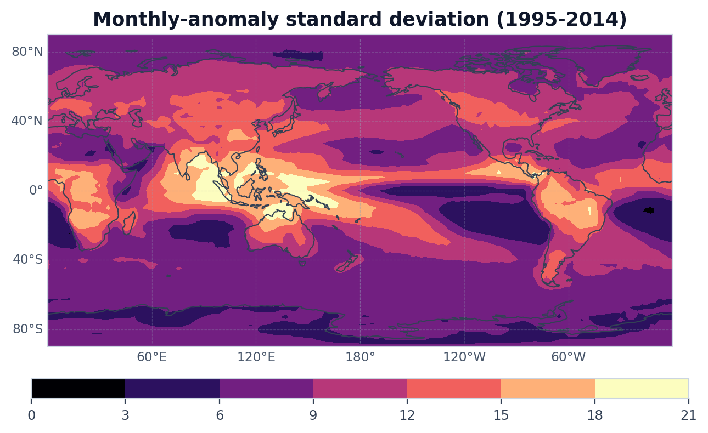
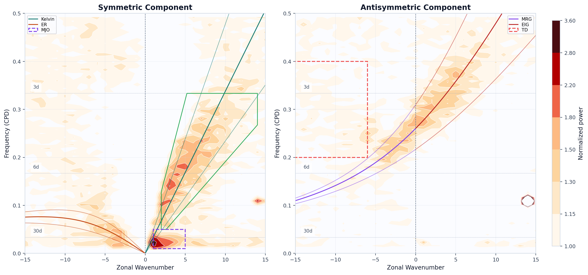
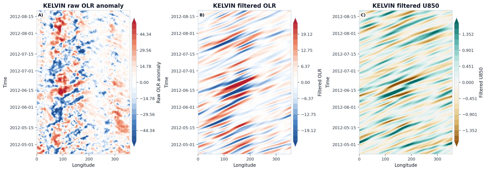
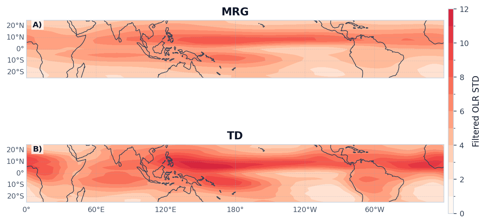
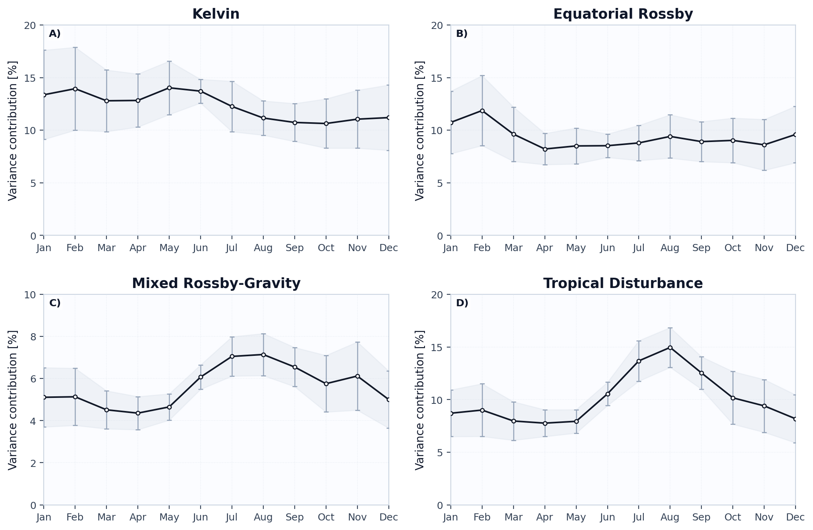
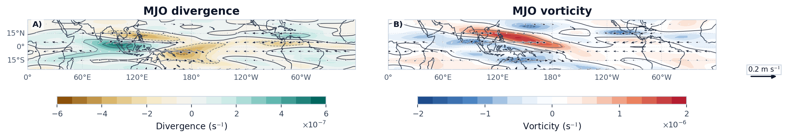
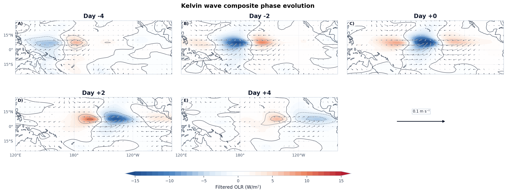
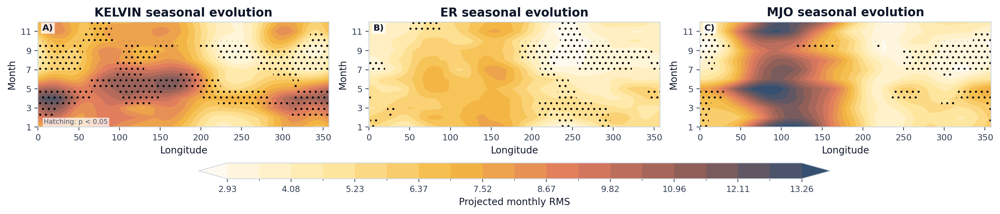
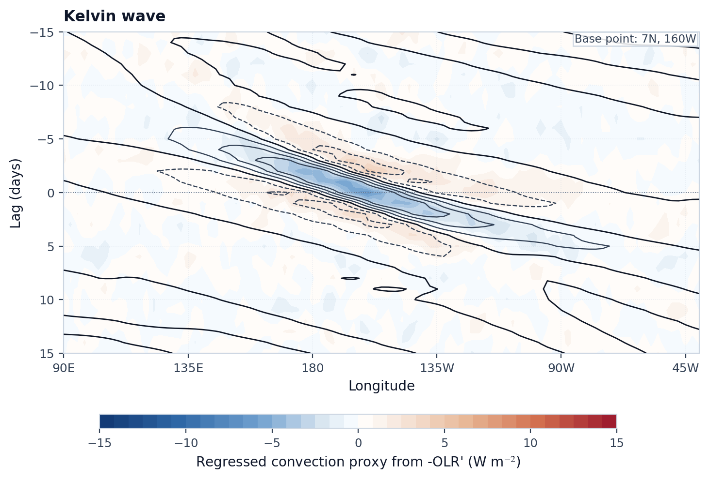

Gallery¶
Featured Cases¶
Case 01
Sample OLR Preview and Variability
样例场与异常变率的快速预览。


open_example_olr · compute_anomaly · standard_deviation
Case 02
WK Spectrum as the Flagship Diagnostic
频率-波数谱空间中的核心诊断结果。

analyze_wk_spectrum · plot_wk_spectrum
Case 03
Wave Signal Extraction in Space and Time
用原始 OLR 异常、滤波 OLR 和 U850 三联图查看 Kelvin、ER、MJO、MRG 的传播结构。

filter_wave_signal · plot_hovmoller_triptych
Case 04
Filtered Spatial Distributions Across Waves
按大尺度与西传 synoptic 波两类分组展示 filter 后空间分布。

filter_wave_signal · plot_wave_spatial_comparison
Case 05
Seasonal Variance-Fraction Diagnostics
参考 Lubis and Jacobi (2015) Fig. 12 与 Fig. 14，展示 Kelvin、ER、MRG 和 TD-type 对 GPCP 日降水方差的季节调制。

compute_monthly_variance_fraction_samples · plot_case05_regional_variance_cycles
Case 06
Low-level Wind Divergence and Vorticity
Kelvin、ER、MJO、MRG 与 TD 的低层风场散度、相对涡度与矢量结构诊断。

horizontal_divergence · relative_vorticity · plot_wind_diagnostics_panel
Case 08
Regional Phase Evolution
参考期刊式相位复合布局，展示 Kelvin、ER、MRG、TD 与 MJO 按各自周期设置的区域聚焦演变与 850 hPa 风场配合。

detect_wave_events · lagged_composite · plot_lagged_horizontal_structure
Case 09
Seasonal Cycle, Annual Evolution and Trend
对比不同波型的季节经向演变，识别活动中心随季节和经度的迁移。

compute_monthly_rms · compute_yearly_rms · plot_wave_annual_trend_comparison
Case 10
Paper-style Lagged Regression Hovmoller
参考 Lubis and Jacobi (2015) 的时经回归图风格，统一比较 Kelvin、ER、MJO、MRG 与 TD 的传播结构。

compute_case10_regression_hovmoller · plot_paper_style_hovmoller
EOF / SVD 诊断页面用于查看不同波型的主模态结构，以及这些模态与 850 hPa 风场之间的对应关系。
Minimal Code¶
from tropical_wave_tools import open_example_olr
from tropical_wave_tools.filters import filter_wave_signal
from tropical_wave_tools.plotting import plot_wave_spatial_comparison
data = open_example_olr()
waves = ["mrg", "td"]
fields = [filter_wave_signal(data, wave_name=wave, method="cckw", n_workers=1).std("time") for wave in waves]
fig, axes = plot_wave_spatial_comparison(fields, titles=[wave.upper() for wave in waves], ncols=2)